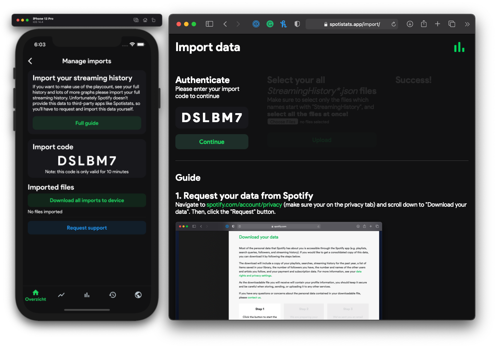
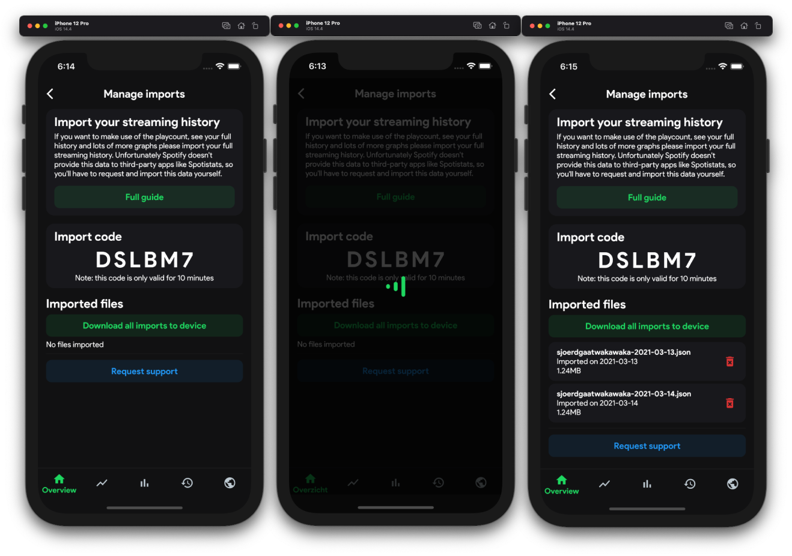

1. Request your data from Spotify
Navigate to spotify.com/account/privacy (make sure you're on the privacy tab) and scroll down to "Download your data". Then, click the "Request" button.
Navigate to spotify.com/account/privacy (make sure you're on the privacy tab) and scroll down to "Download your data". Then, click the "Request" button.
Next, to download your data, you must send a request. Go over to your email and click "confirm".
As Spotify states:
We are preparing your data file. This can take up to 30 days to complete.
You'll receive an email when it is ready to download.
But in 99% of the cases, you'll receive the data within ±3 days.
To link your files to your account, you'll need to fill in a special import code. You can find your unique import code in the Spotistats app on the Manage imports page. "Then copy (tap the code) or type the code into website.
Once Spotify has sent you your data, it will be in a .ZIP file. This includes a lot of personal information which you should never share with others. How to extract a .ZIP file
When you have your .JSON files ready, click the "Choose files" button. Then, select all files starting with StreamingHistory (hold shift to select multiple files).
Note: depending on the number of files this can take a couple of seconds
The last step is to download your imported files onto your device. Simply click "Download all imports to device" and wait a couple of seconds while the app downloads and processes them.
Congratulations! You can now view your full listening history, playcount, and more. Note, that this will only include the data you've imported yourselves. If you want to update this data, start again at step 1 :)